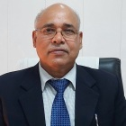
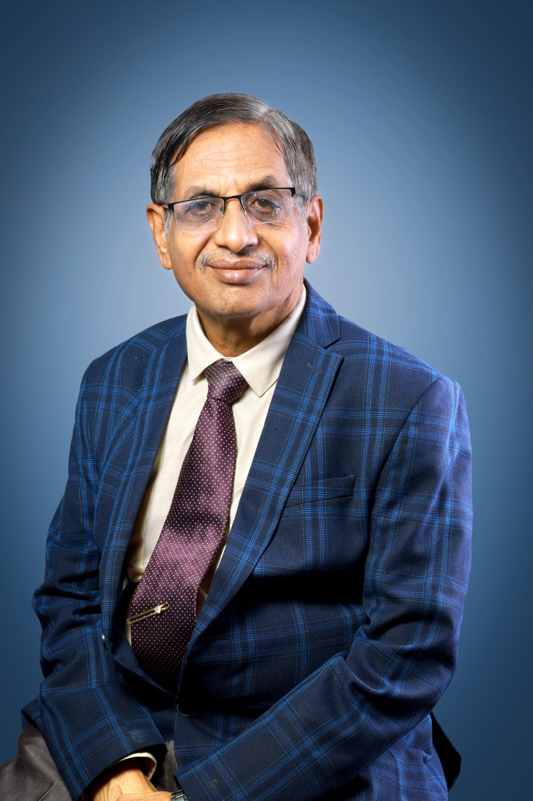
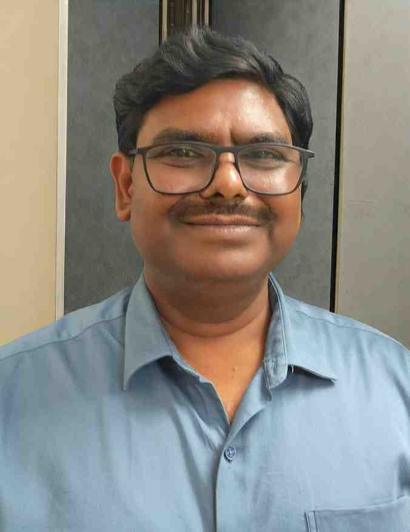
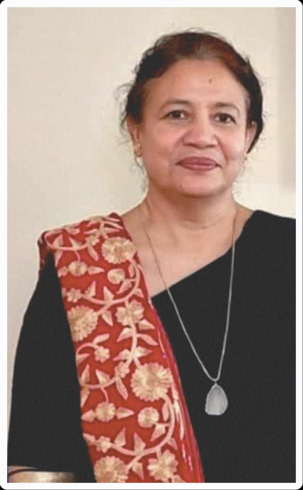
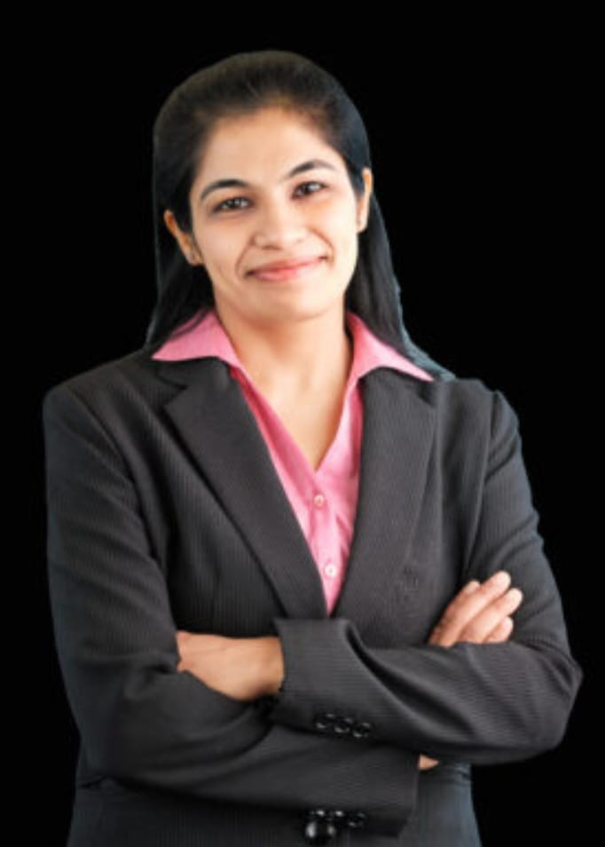
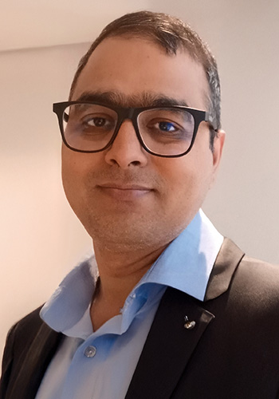
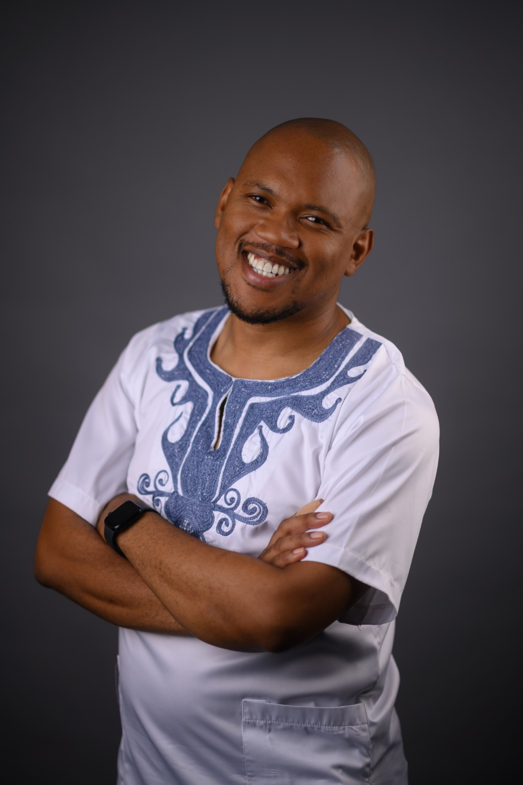
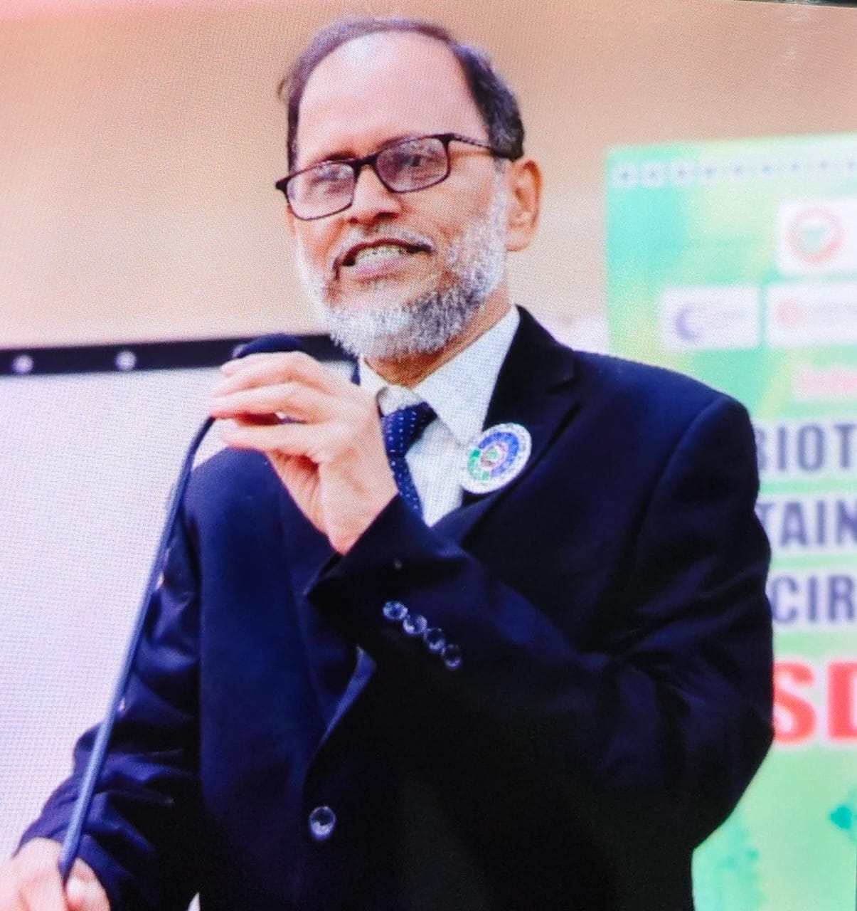
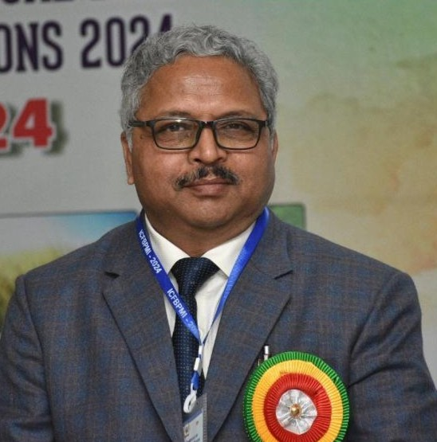

CHIEF PATRON
Dr. (Col.) Bijendra Singh
Vice Chancellor
Dr. Rammanohar Lohia Avadh University, Ayodhya
CONFERENCE LEADERSHIP
ICMS–2027 is guided by distinguished academic and scientific leaders from the university and the microbiology community.

Vice Chancellor
Dr. Rammanohar Lohia Avadh University, Ayodhya

National President
Microbiologists Society, India

Professor & Head, Department of Microbiology
Dr. Rammanohar Lohia Avadh University, Ayodhya
SCIENTIFIC COMMUNITY

Invited Speaker
Udayana University
Denpasar, Bali, Indonesia

Invited Speaker
Dept. of Biochemistry and Molecular Biology
University of Rajshahi, Rajshahi-6205, Bangladesh

Invited Speaker
School of Medicine, Washington University, USA

Invited Speaker
University of Houston, USA

Invited Speaker
Chair: SARChI in African Microbiome Innovation, Microbiology, Faculty of Science, School for Data Science and Computational Thinking, Stellenbosch, South Africa

Invited Speaker
Director, CIBR
Siksha 'O' Anusandhan Deemed to be University, Bhubaneswar

Invited Speaker
School of Biotechnology
Jawaharlal Nehru University, New Delhi

Invited Speaker
Department of Biotechnology
Deen Dayal Upadhyaya Gorakhpur University, Gorakhpur

Invited Speaker
FNAAS, FNEA, FBS
Former Vice Chancellor, Fakir Mohan University, Balasore, Odisha

Invited Speaker
Department of Biotechnology and Bioinformatics
North Eastern Hill University, Shillong

Invited Speaker
INSA Fellow
BRIC-NIPGR, Aruna Asif Ali Marg, New Delhi

Invited Speaker
Department of Microbiology
Raiganj University, West Bengal

Invited Speaker
Department of Botany
Banaras Hindu University, Varanasi

Invited Speaker
Director, NBAIM, Mau

Invited Speaker
Director, IISER, Kolkata

Invited Speaker
Institute of Medical Sciences, Banaras Hindu University, Varanasi

Invited Speaker
Former Head, Department of Biochemistry, University of Allahabad, Prayagraj

Invited Speaker
Department of Botany, Banaras Hindu University, Varanasi